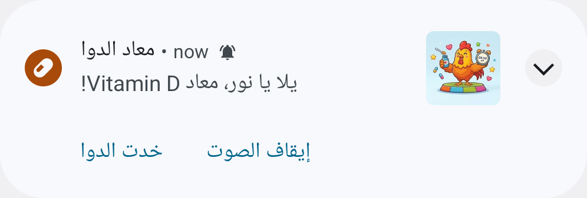

طريقة استخدام تطبيق «كوكو دوا»
التطبيق بيفكّر بمواعيد الأدوية، وبيفرّح الأطفال بالنقط لما الدوا يتاخد في معاده.
مهم: التطبيق ده للتذكير بس. مش بيدي نصايح طبية ولا بيحدد جرعات. الدكتور هو اللي بيحدد الدوا والجرعة، والأهل هم اللي بيكتبوا الدوا ومواعيده في التطبيق.
أول مرة
1اختاروا لغة التطبيق: العربية أو English.
2اعملوا رقم سري للأهل من 4 أرقام أو أكتر، واكتبوه مرتين. خلّوه بعيد عن الأطفال.
3اضغطوا «إضافة دوا»، واكتبوا الرقم السري.
كل يوم
7في المعاد الموبايل بيرن بصوت المنبه لحد 30 ثانية، حتى لو صامت أو هزاز. التذكير فيه اسم الطفل واسم الدوا. «إيقاف الصوت» بيسكّت الصوت بس، والتذكير بيرجع بعد شوية لو الدوا ماتأكدش.

8اضغطوا على التذكير. هيفتح الدوا ده بالظبط.
9بعد ما الطفل ياخد الدوا، حد كبير يكتب الرقم السري. الطفل ياخد نقط ومكافأة على الشاشة، ومعاها صوت فرحان قصير.
10الصفحة الرئيسية فيها دوا كل طفل ونقطه والأيام ورا بعض.
النقط والأيام ورا بعض
- 10 نقط لكل دوا يتأكد، و5 نقط زيادة لو اتأكد خلال نص ساعة من معاده.
- 20 نقطة لما كل أدوية اليوم تتاخد.
- 50 نقطة لما الأيام ورا بعض توصل 3 و7 و14 و30 و60 و100 يوم.
- كل 100 نقطة مستوى جديد. النقط عمرها ما بتتخصم.
البطارية: علشان التذكير يرن في معاده
بعض الموبايلات بتوقف التطبيقات علشان توفر البطارية، وساعتها التذكير ممكن يتأخر أو مايرنّش.
سامسونج
- الإعدادات ثم «التطبيقات» ثم «كوكو دوا» ثم «البطارية»: اختاروا «غير مقيد» Unrestricted.
- الإعدادات ثم «البطارية» ثم «حدود الاستخدام في الخلفية» Background usage limits: التطبيق ماينفعش يكون في التطبيقات النايمة Sleeping apps أو النايمة نوم عميق Deep sleeping apps. ضيفوه في التطبيقات اللي عمرها ما بتنام Never sleeping apps.
موبايلات تانية (شاومي، أوبو، ريلمي، فيفو، هواوي وغيرهم)
- إعدادات التطبيق ثم «البطارية»: اختاروا «بدون قيود» No restrictions أو «بدون تحسين» Don't optimize.
- في شاومي كمان: شغّلوا «التشغيل التلقائي» Autostart للتطبيق.
- الأسامي بتختلف من موبايل للتاني. للتأكد: «إرسال تذكير تجريبي»، واقفلوا التطبيق، ولو التذكير وصل يبقى تمام.
أسئلة بتتسأل كتير
- مفيش صوت: في إعدادات الأهل اتأكدوا إن «صوت منبه للتذكيرات» شغال، وصوت المنبه مش على صفر، ووضع عدم الإزعاج مقفول أو بيسمح بالمنبهات. وبعدين جرّبوا «إرسال تذكير تجريبي».
- التذكير مارنّش: الإشعارات لازم تكون شغالة (لو فيه شريط أحمر في الصفحة الرئيسية اضغطوا «تظبيط»)، والبطارية زي ما هو مكتوب فوق، وساعة الموبايل وتاريخه مظبوطين. لو حد عمل «إيقاف إجباري» Force stop للتطبيق، افتحوه مرة واحدة وهو هيرجّع كل التذكيرات.
- نسيت الرقم السري: اضغطوا «نسيت الرقم السري» تحت الأرقام. الموبايل هيطلب قفل الشاشة بتاعه (رقم أو نقش أو باسورد)، وبعدين اعملوا رقم سري جديد. البيانات كلها بتفضل. لو الموبايل مالوش قفل شاشة، اعملوا له قفل الأول.
- موبايل جديد: البيانات مش بتتنقل، ومفيش نسخة احتياطية: ثبّتوا التطبيق وضيفوا الأطفال والأدوية من الأول. قبل ما الموبايل القديم يروح لحد تاني: امسحوا التطبيق، أو «مسح كل البيانات» من إعدادات الأهل.
- التطبيق اختفى: دوّروا على «كوكو دوا» (صورة الديك) في قايمة كل التطبيقات، مش بس على الشاشة الرئيسية. لو مش موجود يبقى اتمسح، والبيانات اتمسحت معاه: ثبّتوه تاني من نفس الرابط، وضيفوا الأطفال والأدوية من الأول.
للمساعدة: <TO BE FILLED>
مهم: التطبيق ده للتذكير بس، ومش بيدي نصايح طبية ولا جرعات. الالتزام بتعليمات الدكتور دايمًا. الصور من جهاز تجريبي، والأسامي اللي فيها وهمية.